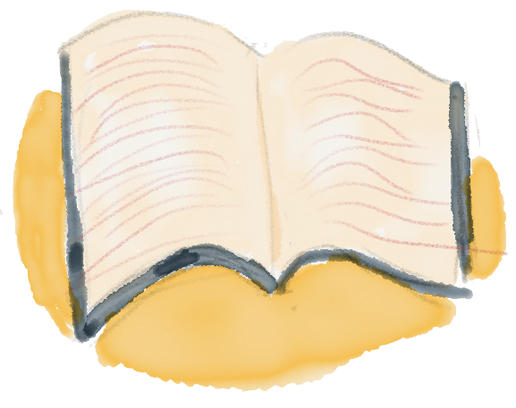
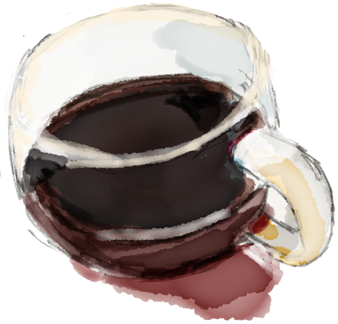

blue
jo
about
Hi, I'm Blue Jo, currently a computer science major at the University of Washington.
If I'm not doing something school related, you might find me:

browsing the latest architecture news,
 exchanging musical discoveries with friends,
exchanging musical discoveries with friends,

burning my tongue on a steaming cup of coffee,
 or playing with my dog, Tedi.
or playing with my dog, Tedi.
Whether it be through advances in food production, healthcare,
or culturally-sensitive design, I am very excited about the potential of
technology to make peoples' lives more rich, meaningful, and fair.
education

University of Washington
2016-2020, Bachelors in Computer Science
Coursework
- Data Structures and Parallelism
- Foundations of Computing I
- Software Design and Implementation
- The Hardware-Software Interface
- Introduction to Data Management
- Programming Languages
skills
- Java
- HTML
- CSS
projects
UW Campus Map
For the final project in my Software Design and Implementation class, I made a "google maps" application for the UW campus which displays a map of campus and the shortest path between any two buildings on the map. Over the course of the project, I wrote hundreds of unit tests. Download the jar.
JAVA
SWING
JUNIT
Digestif
With a graduate student in the UW HCI lab, I helped implement an online tool to encourage researchers to create "digestif," or conclusion pages for their online experiments. This project was made to support a series of papers about conclusion pages, their benefits, and how to promote their use. Check out the prototype.
HTML
CSS
JAVASCRIPT
JQUERY
BOOTSTRAP